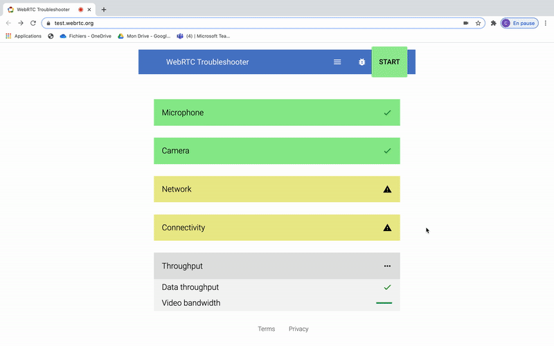

It is important to check that your network is properly configured to use Dazzl.
We recommend using Google Chrome for better accounting.
Make sure that HTTP, HTTPS, RTMP, and WebRTC protocols are not blocked by your IT department.
The ports that are used for sending and receiving are :
- HTTP: 80/tcp
- HTTPS: 443/tcp
- RTMP: 80/tcp
- WebRTC: 443/tcp & 443/udp
It is essential for the proper functioning of the platform that these ports are open to public IP addresses, or at least to AWS servers (provider of the cloud part of our platform).
You want to keep your firewalls? You can configure them with Amazon by following this link: https://docs.aws.amazon.com/general/latest/gr/aws-ip-ranges.html
If you are still unable to receive your sources on the Dazzl platform with these ports open, perform the following diagnostics:
- Click this icon in the lower left corner of the Dazzl Platform:
- Click on start, and check that everything is ok (not red).
- We advise you to send us your report, by clicking on and then "upload". That will generate a link, share it to our team at [email protected] It will then be diagnosed and we will get back to you as soon as possible.

You still can't connect your source? Contact our technical team by sending a request on this support page or directly by email ([email protected]).